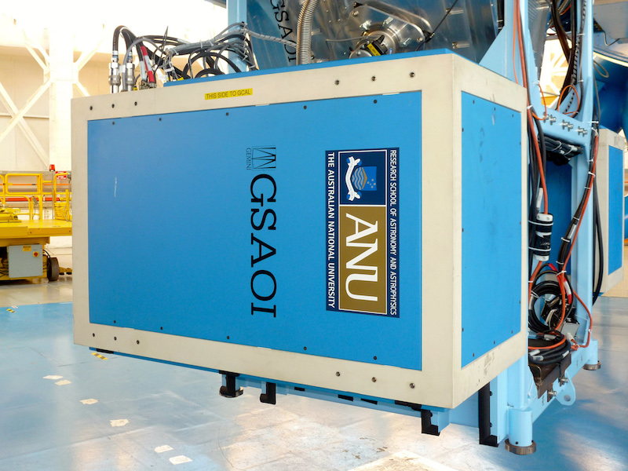
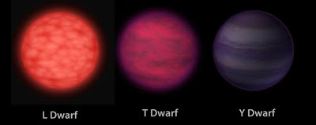

Searching for Binary Y Dwarfs
I am searching for Binary Y dwarfs with the Gemini GeMS Multi-conjugate Adaptive Optics Systems and performing simulations to determine the luminosity and separation
limits for non-detection of companions. Studying the binarity of these objects will address the multiplicity properties of brown dwarfs, which is a empirical constraint on
star formation models. Binarity studies allow us to answer important questions such as: How common are binary systems? What is mass ratio between the secondary and the primary? or What is the limit
separation at which a binary system can be formed? Multiple systems also provide an opportunity to measure the masses of these objects when both astrometry and radial velocity data are available.
In addition, binary brown dwarfs can be used to characterize atmospheres of sub-stellar objects.

Measuring the distances to the new ultra-cool Y-type brown dwarfs
My research project will use the new GEMINI Multi Adaptive Optics System (GeMS) to implement an observation program to measure distances to the new ultra-cool Y-type brown dwarfs discovered by the
NASA Wide-field Infrared Survey Explorer (WISE). These cool objects have extended the spectral classification system to the Y spectral type
and enable the study of the properties of objects in the temperature gap between the coolest previously known sub-stellar objects (Teff 500 K) and gas-giant planets (Teff 124 K). Trigonometric parallaxes
provide the most direct distance measurement for stars and estimating the distances to these new objects is of fundamental importance for their characterization. Luminosities determined will constrain models,
and combined with color-color and color-magnitude diagrams allow the study of other physical and chemical parameters such as gravity, metallicity and the presence of clouds and/or dust. In addition, combining
luminosity with evolutionary-model radii will determine effective temperatures.

Caption and image credit: NASA/JPL-Caltech.